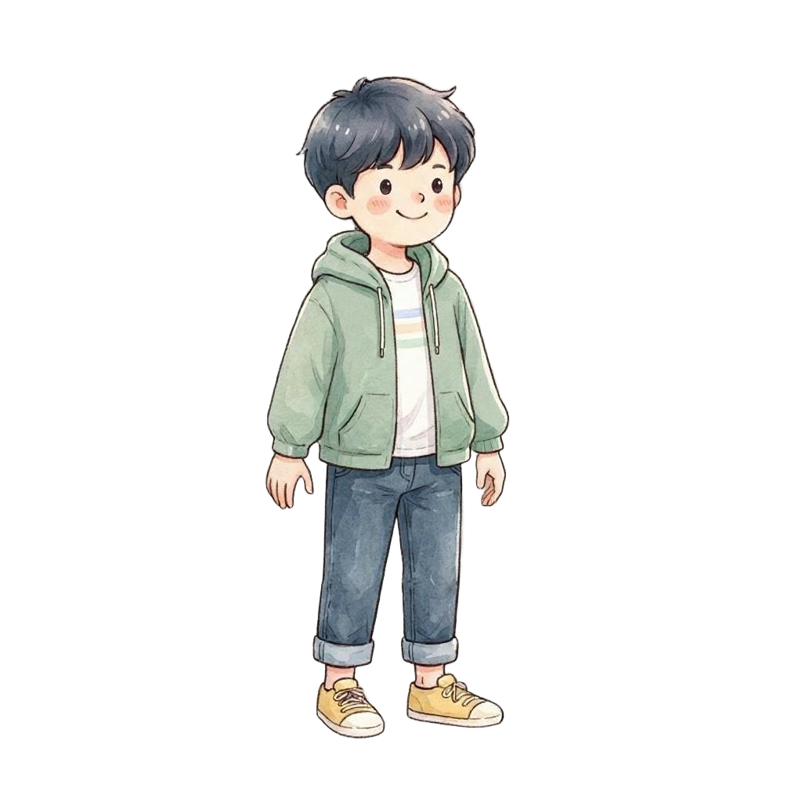
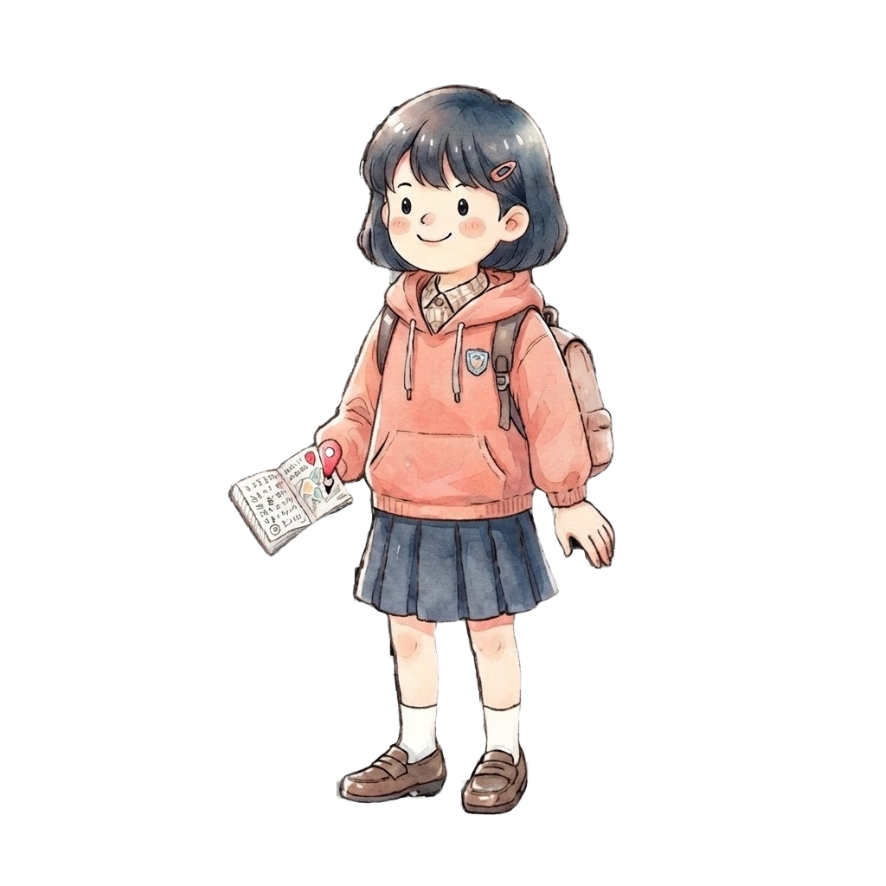

인천 MATH TOUR
포기
⟳ 처음부터(작업용)
어느 권역을 여행할까?
포기 0
보석 0 / 19
인천 MATHTOUR 시작!


건너뛰기 ▶
시작!
미션
여기에 실제 미션(문제/활동)이 들어갑니다.
미션 완료 (보석 획득)
닫기
닫기
확인
취소
보석을 얻었어요!
다음 ▶
🎉 투어를 마쳤어요!
투어 소감을 남겨주세요.
학교
학번
이름
소감
제출하기
아쉽습니다…
처음 화면으로
건너뛰기 ▶
🏆 나의 투어 기록
끝